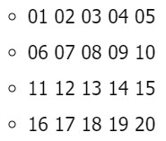
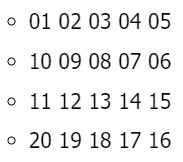

Ejercicio de arreglos
Proyectos Java1. Crear un vector de tipo Entero con 5 posiciones, llenarlo con información solicitada al usuario. Después de recoger toda la información, se requiere imprimir el índice de cada posición en el arreglo con su valor de la siguiente manera:
package arreglos;
import java.util.Scanner;
public class Arreglo1Numeros {
public static void main(String[] args) {
int posicion = 0, num;
int[] vector = new int[5];
Scanner sc = new Scanner(System.in);
while (posicion < 5) {
System.out.println("Posicion numero: "+ posicion);
System.out.println("Ingrese un numero del 1 al 100: ");
num = sc.nextInt();
if (num > 0 && num <= 100) {
vector[posicion] = num;
} else {
System.out.println("El numero debe estar entre 1 y 100.");
posicion -= 1;
}
posicion += 1;
}
if (posicion == 5) {
System.out.println("Lista de numeros: ");
for (int j = 0; j < vector.length; j++) {
System.out.println("["+ j+ "] = "+ vector[j]);
}
}
}
}
2. Crear un arreglo de números enteros de 20 posiciones, el cual, debe ser llenado con números aleatorios entre 1 y 100; después de haber llenado dicho arreglo, se debe volver a recorrer utilizando un ciclo diferente al que se usó para llenarse e imprimir los números pares e impares. Ejemplo
Números pares: 2, 4, 6, 8, 10
Números impares: 1, 3, 5, 7, 9
package arreglos;
public class Arreglo2Enteros {
public static void main(String[] args) {
int temp, a = 0, k = 0, l = 0;
int[] num = new int[20];
System.out.println("Numeros enteros de 20 posiciones,
con numeros aleatorios de 1 a 100");
//Inicializar array
for (int i = 0; i < num.length; i++) {
num[i] = (int) (Math.random() * 100 +1); //Inicializa
for (int j = 0; j <= i-1; j++) { //Comprobacion para no
repetir numeros, se hace hasta el numero anterior
de la lista
while (num[j] == num[i]) {
num[i] = (int) (Math.random() * 100 +1);
j = 0; //Para volver a comparar el nuevo numero
aleatorio, con los anteriores de la lista
}
}
}
//Orden ascendente
for (int m = 0; m < num.length; m++) {
for (int n = 0; n < (num.length-1)-m; n++) {
if (num[n] > num[n+1]) {
temp = num[n];
num[n] = num[n+1];
num[n+1] = temp;
}
}
}
//Mostrar pares
System.out.println("Numeros pares: ");
while (k < num.length) {
a = num[k];
if (a % 2 == 0) {
System.out.print(a + " ");
}
k += 1;
}
//Mostrar impares
System.out.println();
System.out.println("Numeros impares: ");
while (l < num.length) {
if ((num[l] % 2) != 0) {
System.out.print(num[l] + " ");
}
l += 1;
}
}
}
3. Imprimir los números primos del 1 al 1000, el resultado debe ser buscado de forma matemática.
package arreglos;
public class Arreglo3Primos {
public static void main(String[] args) {
int num, contador;
System.out.println("Numeros primos: ");
for (int i = 1; i < 1001; i++) {
num = 1;
contador = 0;
while (num <= i) {
if (i % num == 0) {
contador += 1;
}
num += 1;
}
if (contador == 2) {
System.out.print(i + " ");
}
}
}
}
4. Dada la siguiente matriz bidimensional, el cual debe de quemar en el código
 Utilizando el conocimiento adquirido, a excepción de hacerlo de forma manual, imprima la siguiente matriz bidimensional.
package arreglos;
public class Arreglo4Matriz {
public static void main(String[] args) {
int[][] num = new int[4][5];
int[][] number = new int[4][5];
int[][] matriz = new int[4][5];
matriz[0][0] = 1;
matriz[0][1] = 2;
matriz[0][2] = 3;
matriz[0][3] = 4;
matriz[0][4] = 5;
matriz[1][0] = 6;
matriz[1][1] = 7;
matriz[1][2] = 8;
matriz[1][3] = 9;
matriz[1][4] = 10;
matriz[2][0] = 11;
matriz[2][1] = 12;
matriz[2][2] = 13;
matriz[2][3] = 14;
matriz[2][4] = 15;
matriz[3][0] = 16;
matriz[3][1] = 17;
matriz[3][2] = 18;
matriz[3][3] = 19;
matriz[3][4] = 20;
System.out.println("Primer matriz, codigo quemado");
for (int i = 0; i < matriz.length; i++) {
for (int j = 0; j < matriz[i].length; j++) {
if (matriz[i][j] < 10) {
System.out.print("0" + matriz[i][j]+ " ");
} else {
System.out.print(matriz[i][j] + " ");
}
}
System.out.println();
}
System.out.println();
System.out.println("Segunda matriz automatica");
inicializar(num);
System.out.println();
System.out.println("Segunda matriz menos quemada");
inicializarMatriz(number);
}
public static void inicializar(int[][] num) {
int contador, disminuye, aumenta, retrocede;
contador = 1;
disminuye = 10;
aumenta = 11;
retrocede = 20;
for (int i = 0; i < num.length; i++) {
for (int j = 0; j < num[i].length; j++) {
if (i == 0) {
num[0][j] = contador;
contador += 1;
}
if (i == 1) {
num[1][j] = disminuye;
disminuye -= 1;
}
if (i == 2) {
num[2][j] = aumenta;
aumenta += 1;
}
if (i ==3) {
num[3][j] = retrocede;
retrocede -= 1;
}
mostrarMatriz(num, i, j);
}
System.out.println();
}
}
public static void mostrarMatriz(int[][] num, int i, int j) {
if (num[i][j] < 10) {
System.out.print("0" + num[i][j] + " ");
} else {
System.out.print(num[i][j] + " ");
}
}
public static void inicializarMatriz(int[][] number) {
for (int i = 0; i < number.length; i++) {
for (int j = 0; j < number[i].length; j++) {
if (i % 2 == 0) { //Filas apres
number[i][j] = i * 5 + j + 1;
} else {
number[i][j] = i * 5 + 5 - j; //Filas impares
}
mostrarMatriz(number, i, j);
}
System.out.println();
}
}
}
5. Se debe de imprimir el siguiente cuadro

El usuario deberá insertar la fila y columna de la cual desea ver el resultado, el resultado de cada celda debe estar previamente calculado en una matriz bidimensional la cual cada resultado obedecerá a la fila y columna insertada por el usuario.
package arreglos;
import java.util.Scanner;
public class Arreglo5MatrizMultiplica {
public static void main(String[] args) {
int fila = 1, contador, filaAMultiplicar, columna, a, b,
qrespuesta;
int[][] tabla = new int[10][10];
int[] base = new int[10];
int[][] resultados = new int[10][10];
Scanner sc = new Scanner(System.in);
//Inicializar tabla
for (int i = 0; i < tabla.length; i++) {
contador = 1;
for (int j = 0; j < tabla[i].length; j++) {
tabla[i][j] = contador;
contador += 1;
}
}
//Inicializar base con la que se multiplicara
contador = 1;
for (int k = 0; k < base.length; k++) {
base[k] = contador;
contador += 1;
}
//Numero de columnas de la matriz
mostrarColumnas(base, tabla);
//Se recorre la matriz
for (int l = 0; l < tabla.length; l++) {
//Filas izquierda
imprimeFilas(fila);
//Muestra la tabla y la base con la que se multiplica
for (int m = 0; m < tabla[l].length; m++) {
if (base[l] >= 10) { //Si el numero tiene dos digitos,
se ajusta el espacio
System.out.print(tabla[l][m] + " x " + base[l] +
" ");
} else {
System.out.print(tabla[l][m] + " x " + base[l] +
" ");
}
}
System.out.println(); //Salto de fila
fila += 1;
}
System.out.println();
//Multiplicación de los numeros de la matriz
System.out.println("Digite la fila que desea conocer el
resultado: ");
filaAMultiplicar = sc.nextInt();
System.out.println("Adicionalmente, elija la columna que
necesita, teniendo en cuenta su fila anterior, para
conocer la casilla que desea: ");
columna = sc.nextInt();
a = tabla[filaAMultiplicar-1][columna-1];
b = base[filaAMultiplicar-1];
respuesta = a * b;
System.out.print(a + " x " + b + " = "+ respuesta);
//Muestra matriz con cada respuesta
imprimeMatrizRespuestas(resultados, tabla, base);
System.out.println();
System.out.println("Multiplicacion con resultados de matriz
bidimensional: ");
resultadosMatriz(resultados, tabla, base);
}
public static void mostrarColumnas(int[] base, int[][] tabla) {
//Numero de columnas de la matriz
System.out.println(
" COLUMNAS");
for (int columna = 0; columna < tabla[0].length; columna++) {
System.out.print(" "+ base[columna]+ " ");
}
System.out.println();
}
public static void imprimeFilas(int fila) {
if (fila >= 10) { //Filas
System.out.print(fila+ " ");
} else {
System.out.print(fila+ " ");
}
}
public static void imprimeMatrizRespuestas(int[][] resultados,
int[][] tabla, int[] base) {
int fila;
fila = 1;
//Numero de columnas
mostrarColumnas(base, tabla);
for (int i = 0; i < tabla.length; i++) {
//Filas
imprimeFilas(fila);
for (int j = 0; j < tabla[i].length; j++) {
resultados[i][j] = tabla[i][j] * base[i];
//Comprobacion resultados con dos digitos para ajustar
espacio
if (resultados[i][j] >= 10) {
System.out.print(" " + resultados[i][j] +
" ");
} else {
System.out.print(" " + resultados[i][j] +
" ");
}
}
fila += 1;
System.out.println();
}
}
public static void resultadosMatriz(int[][] resultados,
int[][] tabla, int[] base) {
//Muestra resultado especifo por cada celda
int fila = 0, columna = 0;
boolean bandera = true;
Scanner sc = new Scanner(System.in);
while (bandera) {
System.out.println("Digite la fila que desea conocer el
resultado: ");
fila = sc.nextInt();
System.out.println("Adicionalmente, elija la columna que
necesita, teniendo en cuenta su fila anterior, para
conocer la casilla que desea: ");
columna = sc.nextInt();
if (fila <= 10 && columna <= 10) {
System.out.println(tabla[fila-1][columna-1] + " x " +
base[fila-1] + " = " +
resultados[fila-1][columna-1]);
bandera = false;
break;
} else {
System.out.println("Se encuentra fuera del rango");
bandera = true;
}
}
}
}